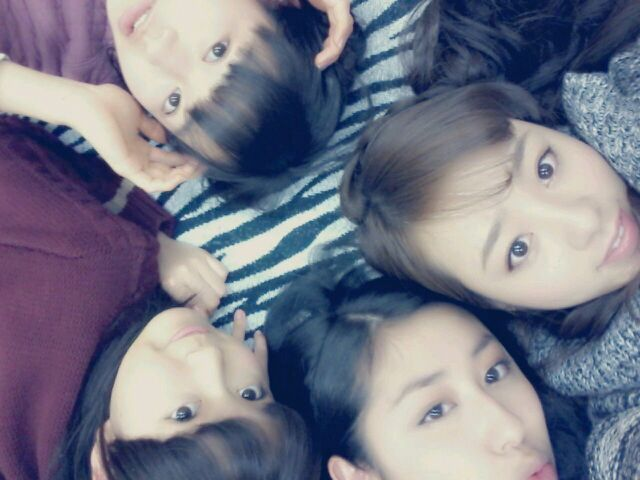

| 2013/01 10 Thu | ひめたん(*>ω<*)そ の252 |

右上:川村真洋ちゃーん
右下:斎藤ちはるちゃーん
左上:伊藤万理華ちゃーん
左下:中元日芽香ちゃーん＊ .
学校始まったよー .
乃木神社に行ったメンバーさんも
いっぱいいるんだけれども
ひめたは学校あって
参加できませんでしたー(´・ω・｀)
おみくじ引きたいよー
そいで新年早々
2日連ちゃんでテストってゆーねー
もう笑えないですねー
明日からは普通に授業！
高校生ってたーいへーんねーふふふ
今週頑張ったらまた
握手会でみなさんに会えるよ＼(^^)／
だから頑張るよーえいえいおー
久々に質問返しまっすー
いつもよりちょっと多めーどんっ
右上:川村真洋ちゃーん
右下:斎藤ちはるちゃーん
左上:伊藤万理華ちゃーん
左下:中元日芽香ちゃーん＊ .
学校始まったよー .
乃木神社に行ったメンバーさんも
いっぱいいるんだけれども
ひめたは学校あって
参加できませんでしたー(´・ω・｀)
おみくじ引きたいよー
そいで新年早々
2日連ちゃんでテストってゆーねー
もう笑えないですねー
明日からは普通に授業！
高校生ってたーいへーんねーふふふ
今週頑張ったらまた
握手会でみなさんに会えるよ＼(^^)／
だから頑張るよーえいえいおー
久々に質問返しまっすー
いつもよりちょっと多めーどんっ

 「ひめたん、最近ホント寒いから風邪ひかないように暖かくしてね。」と、メンバーが１０００円くれました。何買う？
「ひめたん、最近ホント寒いから風邪ひかないように暖かくしてね。」と、メンバーが１０００円くれました。何買う？
受け取れないですー(´;ω;`)
自分があったかくなるために使いなよーってなる←
でももし寒いなーって思った時にお財布に1000円あったら？って質問なら
カフェ行ってホットココアとか飲みたいかな( ^ω^ )
ひめたんはどこかイルミネーション見に行った？
今はあちこちイルミネーションとかキレイだけどひめたんはどこか見に行く予定はあるのかな？
今年は行ってないなー
なんか東京って年中夜でも明るいから、毎晩イルミネーション見てるみたいだよね！
えー違うって？そんなことはわかっておる(｀・ω・´)
東京だったらどこが綺麗なんか、誰か教えてくださいよー
でも夜道怖いー...
 『不思議の国のアリス』に登場するキャラクターの中で、会ってみたいのは誰ですか
『不思議の国のアリス』に登場するキャラクターの中で、会ってみたいのは誰ですか
アリスちゃんと三月うさぎさん！
会うならアリスちゃんコスとか着て、お菓子を持って会いに行きたい＊
そゆの憧れるねー
『かもめの玉子』っていう お菓子知ってる？
恐竜のたまごの仲間ー？
かもめの玉子はわからんけど
恐竜のたまごならわかる( ^ω^ )
地震、カミナリ、火事、おやじ、
このなかでひめたんが一番怖いのはどれですか？
笑えないのは火事かな(´;ω;`)
いや地震と雷も笑えないけど、火事がいちばん実感わかないんだよなー
おやじ？
ひめたんのぱぱは優しいですんっ
ブログに載せてほしい写真のリクエストってあり？
受け付けましょう！
なんだなんだね(^^)？
 ひめたんから見てまりっかって人見知りだと思いますか？
ひめたんから見てまりっかって人見知りだと思いますか？
人見知りって自分でゆってるの
聞いたことあるわそういえば笑
んま、仲良くなったらネコちゃんみたいになついてきますまりかは。
かーわーいーいー。はーい。笑
好きなタイプの男性は？
おにいちゃんみたいな人∪^ω^∪♪
クリスマス，お正月，お誕生日 ひめたんが一番すきなのはどーれっ？
.+゜.+゜(o(。・д・。)o).+゜.+゜
↑この子かわゆー＊
やっぱしお誕生日かなー
お誕生日ってのはやっぱし、いろーんな人との存在とかに改めて感謝できる日だもんね！
いやクリスマスとお正月ももちろん好きなんだけど、あんのー、寒いじゃん←
ひめたんは春生まれだからね(ω)♪
座右の銘おしえてー！！！
一期一会。
山下先生が大切にされてる言葉です＊
ちなみにひめたんの小6の担任。
ひめたんはなぜ美人かつ美女なの？
美人かつ美女。ふっふっふ
そんなに褒めると調子のるよー
とかゆってー(´・ω・｀)
いやー美人かつ美女になりたいね。
頑張ろうーえいえいおー
いままで見たドラマの中でひめたんBest5 は?
ホタルノヒカリ2、危険なアネキ
ハガネの女、ごくせん2、エースを狙え
とかかなぁ！
もっといっぱいあるかもだけど、
ぱっと出てくるのはこの5っかなー
どんな曲で感動する!?
メロディーも去ることながら、
やっぱし歌詞のステキな曲！
えっとー...
これからも自分磨き頑張ります！
変わらずひめたんのこと応援してくれたら嬉しいです。にっこり←
次の握手会も楽しいお話したいな♪
(＊´・ω・＊)ひめたん
コメント(222)
2013/01/10 07:06